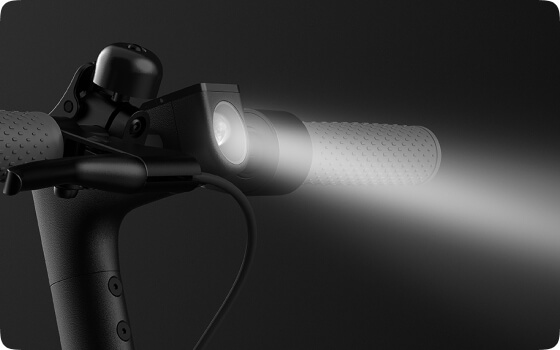
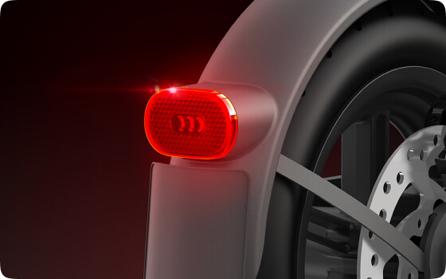

Заботится о вашей безопасности




Яркие ходовые огни
Продуманный угол рассеивания света позволяет сохранять хорошую видимость, не ослепляя других участников движения.
Двойная тормозная система
При нажатии наручку тормоза системы переднего и заднего колеса активируются последовательно, сокращая тормозной путь и обеспечивая безопасную и плавную остановку.
Яркая задняя фара
При включении ходовых огней задняя фара включается автоматически. При нажатии на ручку тормоза она начинает мигать, предупреждая других участников движения.
Отражатели спереди, сбоку и сзади
Улучшенные отражатели, размещенные с четырех сторон, делают вашу поездку в темное время суток безопаснее.